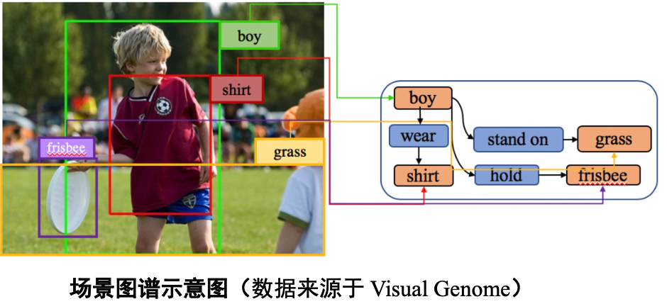
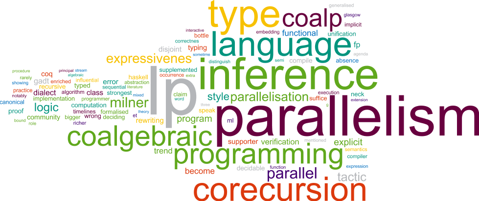
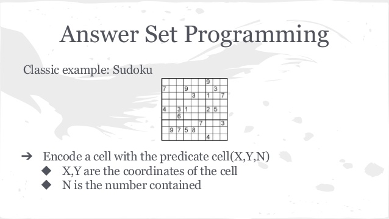
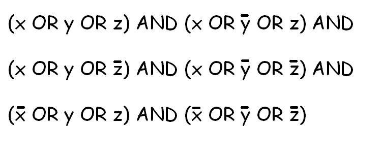

研究方向
-
研究论文：
场景图谱用结构化的信息描述一个场景。场景图谱可以表示为视觉三元组的集合，每条三元组由“头部实体”、“关系”和“尾部实体”三个元素构成，“头部实体”和“尾部实体”对应于图片上的一个包围盒，包围盒附有实体类型和实体属性，“关系”描述了“头部实体”和“尾部实体”之间的关系。场景图谱已经成为计算机视觉领域和人工智能实际应用时的重要资源，比如图像检索、基于场景图谱的描述语句相似性检测、图像视觉问答等。
- Hai Wan, Yu-zhou Luo, Jianfeng Du, Jialing Ou, Baoyi Wang, Jeff Z. Pan: Scene Graph Refinement with Commonsense Knowledge. Submitted to IJCAI 2019.
- Hai Wan, Leilai Li, Jianfeng Du, Jinrui Liang, Haichen Chen, Jeff Z. Pan: Understanding Social Relationship with Person-Pair Relations. Submitted to IJCAI 2019.
- Hai Wan, Yonghao Luo, Bo Peng, Wei-Shi Zheng: Representation Learning for Scene Graph Completion via Jointly Structural and Visual Embedding. IJCAI 2018: 949-956.
- Zhou Yin, Wei-Shi Zheng, Ancong Wu, Hong-Xing Yu, Hai Wan, Xiaowei Guo, Feiyue Huang, Jianhuang Lai: Adversarial Attribute-Image Person Re-identification. IJCAI 2018: 1100-1106.
- Jianfeng Du, Kunxun Qi, Hai Wan, Bo Peng, Shengbin Lu, Yuming Shen: Enhancing Knowledge Graph Embedding from a Logical Perspective. JIST 2017: 232-247.
相关数据集： -
研究论文：
知识表示和推理是人工智能领域，致力于以计算机系统可用于解决复杂任务（例如诊断医学状况或以自然语言进行对话）的形式表示关于世界的信息。
- Wanshan Zheng, Zibin Zheng, Hai Wan, Chuan Chen. CNDynamically Route Hierarchical Structure Representation to Attentive Capsule for Text Classification. IJCAI2019. Accepted.
- Xiao Huang, Biqing Fang, Hai Wan, Yongmei Liu: A General Multi-agent Epistemic Planner Based on Higher-order Belief Change. IJCAI 2017: 1093-1101.
- Zhanhao Xiao, Andreas Herzig, Laurent Perrussel, Hai Wan, Xiaoheng Su: Hierarchical Task Network Planning with Task Insertion and State Constraints. IJCAI 2017: 4463-4469.
- Hai Wan, Heng Zhang, Peng Xiao, Haoran Huang, Yan Zhang: Query Answering with Inconsistent Existential Rules under Stable Model Semantics. AAAI 2016: 1095-1101.
- Quan Yu, Hai Wan, Jiangtao Xu, Freddy Lécué, Liang Chang: Explanatory Diagnosis of an Ontology Stream via Reasoning About Actions. ECAI 2016: 1596-1597.
- Huaping Zhong, Jianwen Zhang, Zhen Wang, Hai Wan, Zheng Chen: Aligning Knowledge and Text Embeddings by Entity Descriptions. EMNLP 2015: 267-272.
-
研究论文：
回答集编程是语法上类似传统逻辑编程而语义上密切于非单调逻辑的一种声明式编程。在传统逻辑编程和回答集编程之间的主要区别是如何表示否定为失败。在传统逻辑编程中，否定为失败指示推导失败；在回答集编程中，它指示一个文字的一致性。
- Jianmin Ji, Hai Wan, Kewen Wang, Zhe Wang, Chuhan Zhang, Jiangtao Xu: Eliminating Disjunctions in Answer Set Programming by Restricted Unfolding. IJCAI 2016: 1130-1137.
- Jianmin Ji, Hai Wan, Ziwei Huo, Zhenfeng Yuan: Splitting a Logic Program Revisited. AAAI 2015: 1511-1517.
- Jianmin Ji, Hai Wan, Peng Xiao: On Elementary Loops and Proper Loops for Disjunctive Logic Programs. AAAI 2015: 1518-1524.
- Jianmin Ji, Hai Wan, Ziwei Huo, Zhenfeng Yuan: Simplifying A Logic Program Using Its Consequences. IJCAI 2015: 3069-3075.
- Jianmin Ji, Hai Wan, Peng Xiao, Ziwei Huo, Zhanhao Xiao: Elementary Loops Revisited. AAAI 2014: 1063-1069.
-
研究论文：
可满足性（Satisfiability）是解决给定的布尔函数，是否存在一组变量赋值，使问题为可满足。布尔可满足性问题（Boolean satisfiability problem；SAT）属于判定性问题，也是第一个被证明属于NP完全的问题。此问题在计算机科学上许多领域的皆相当重要，包括计算机科学基础理论、算法、人工智能、硬件设计等等。
- Weilin Luo, Hai Wan, Hongzhen Zhong, Ou Wei: CoAPI: An Efficient Two-Phase Algorithm Using Core-Guided Over-Approximate Cover for Prime Compilation of Non-Clausal Formulae. Submitted to IJCAI 2019.
-
研究论文：

组合最优化，在应用数学和理论计算机科学的领域中，组合优化是在一个有限的对象集中找出最优对象的一类课题。在很多组合优化的问题中，穷举搜索／枚举法是不可行的。组合优化的问题的特征是可行解的集是离散或者可以简化到离散的，并且目标是找到最优解。常见的例子有旅行商问题和最小生成樹。二维的例子，比如服装厂做衣服，衣服分成很多块，这些块需要从布料上切下来。怎么切，剩下的废布料最少？三维的例子，如集装优化。
- Peilin Chen, Hai Wan, Shaowei Cai, Weilin Luo, Biqing Fang, Jia Li: Combining Reinforcement Learning and Configuration Checking for Maximum k-plex Problem. Submitted to IJCAI 2019.
- Biqing Fang, Hai Wan, Shaowei Cai, Weilin Luo, Zejie Cai: An Incremental Evaluation Mechanism for the Critical Node Problem. Submitted to IJCAI 2019.
- Hongzhen Zhong, Hai Wan, Shaowei Cai, Weilin Luo, Xinrui Gao: Using Unsatisfiable Cores to Estimate Maximum Power in CMOS Combinational Circuits. Submitted to IJCAI 2019.
Last Updated: Apr 2019